Sukoon
A self-initiated research project and app
about men's mental wellbeing
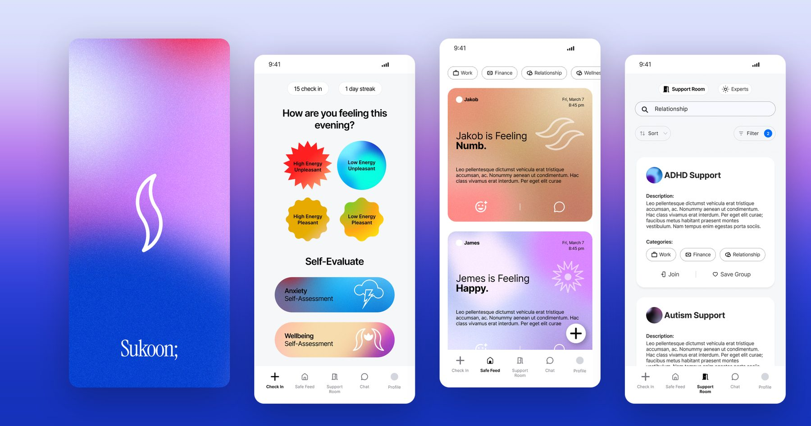
- Project
- Self-initiated
- Year
- 2024–25
- Role
- Research, UX and UI, campaign design
- Deliverables
- Survey, app concept, posters, infographics, social series
In India, men are expected to carry their problems alone. Sukoon (सुकून, peace of mind) started as a question about why men don’t ask for help, and became an anonymous app and an awareness campaign built on what people told me.
Men die by suicide at more than twice the rate of women.
I started with desk research: national figures, news reports and talks by psychologists. Men account for about 71% of suicides in India, and in 2022, 118,980 men died by suicide. The same reasons kept coming up: pressure to be the provider, financial stress, family problems, substance use, and the belief that showing feelings is a weakness.
35 people told me how they deal with stress.
I ran an anonymous survey with 35 respondents: 19 men, 15 women and one person who preferred not to say. Most of the men were between 18 and 34, either students or working. The answers were consistent across both groups.
All 35 respondents. Among the 19 men: 89% · 21% · 63% · 84%.
Sometimes it feels like there is no meaning to my life, but then it really hurts and I don’t know what to talk about or whom to talk to.Survey respondent, lightly edited for spelling
Privacy is the way in.
Half the respondents cope by keeping to themselves, and almost half feel uncomfortable sharing. Yet most would talk to someone if it were easy and confidential. So Sukoon starts anonymous: no real names, check-ins that take a few seconds, and support that builds from there.
Five tabs, from a quick check-in to a real conversation.
- Check InPick a mood on two scales, energy and pleasantness, and keep a daily streak.
- Self-assessmentsShort questionnaires on anxiety, depression, substance use, sleep and wellbeing. Higher scores point you to a professional.
- Safe FeedShare how you feel anonymously, filter by topics like work, finance and relationships, and react with support.
- Support RoomsJoin a peer group by topic, or find an expert.
- ChatTalk one to one, or with a mental wellness AI.
- ProfileYour check-ins, saved groups and therapist appointments in one place.
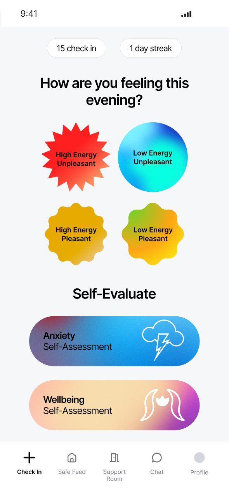
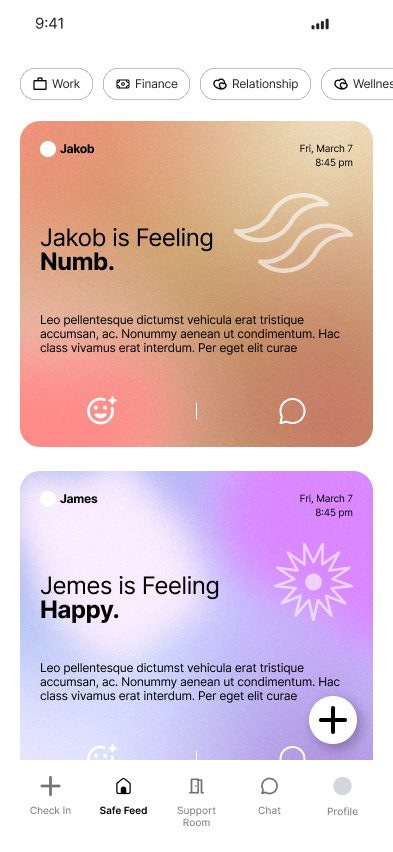
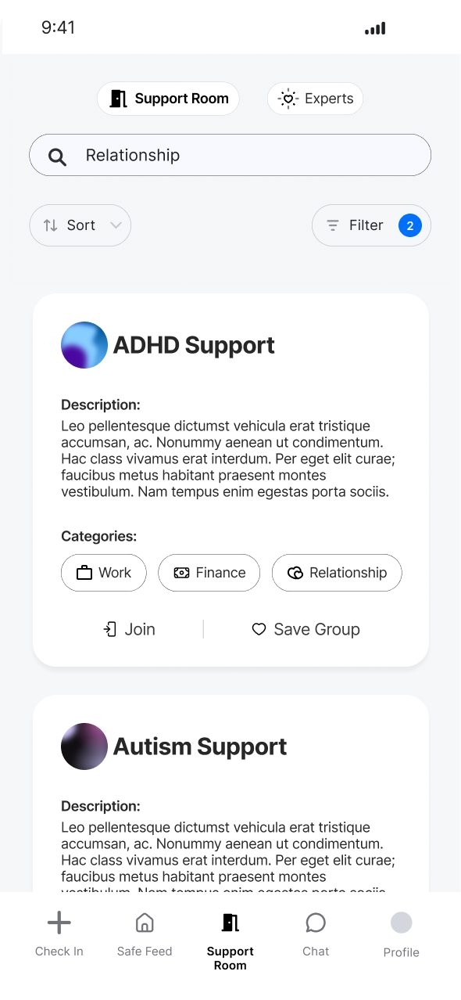
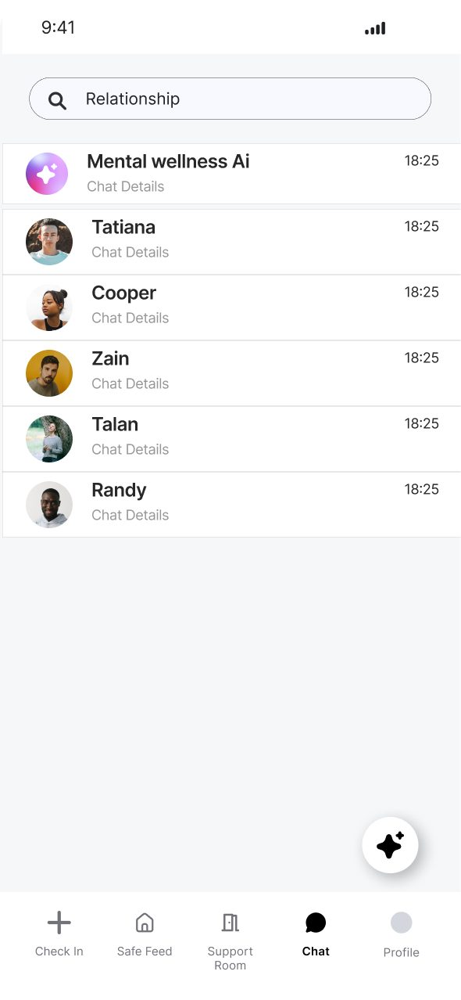
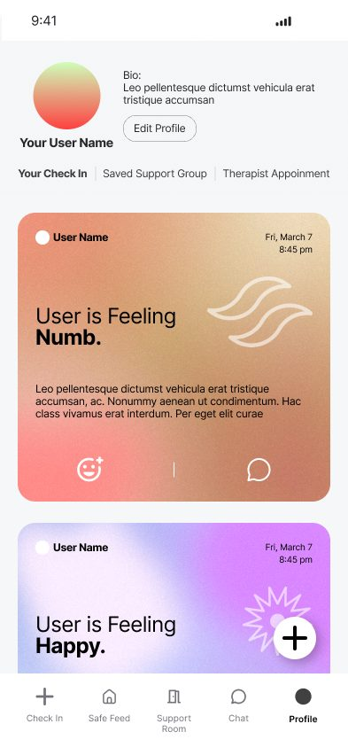
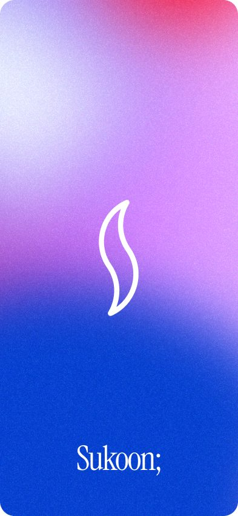
Taking the conversation off the screen.
An app only helps the people who open it, so I designed an awareness campaign alongside it: three posters with a helpline number and QR code, two infographics on the numbers and on financial stress, and an A to Z series of 26 cards, one mental health word for each letter.
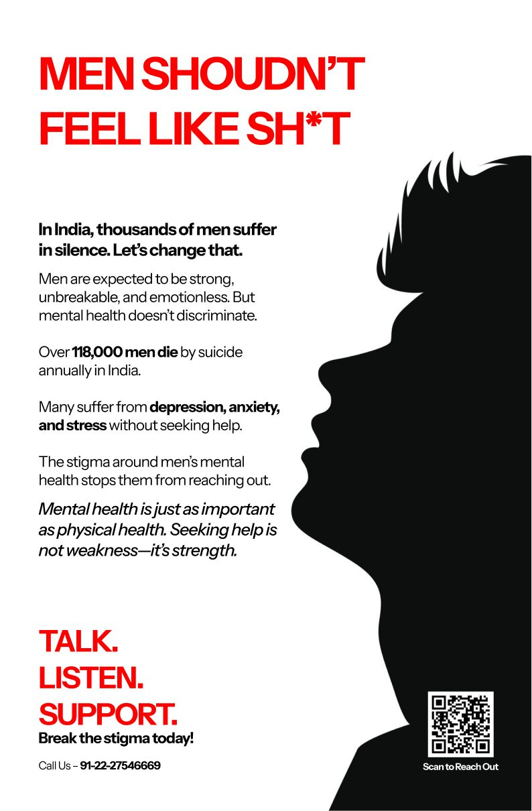
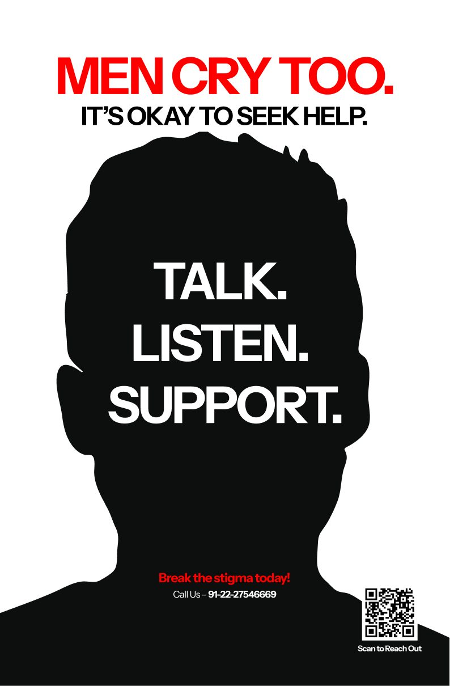
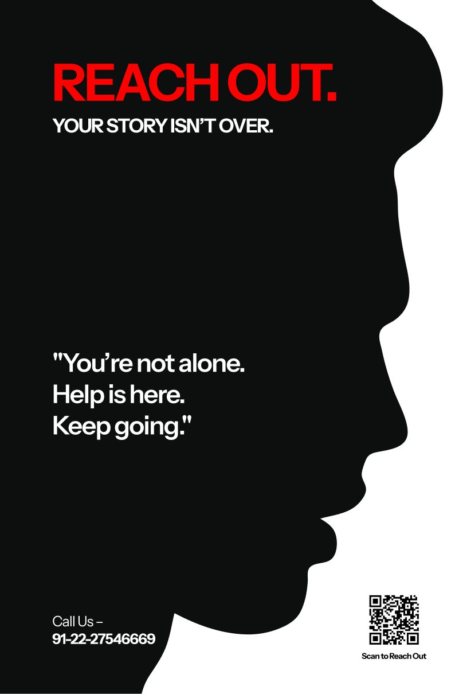
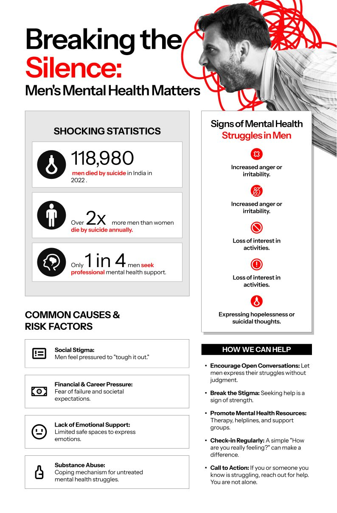
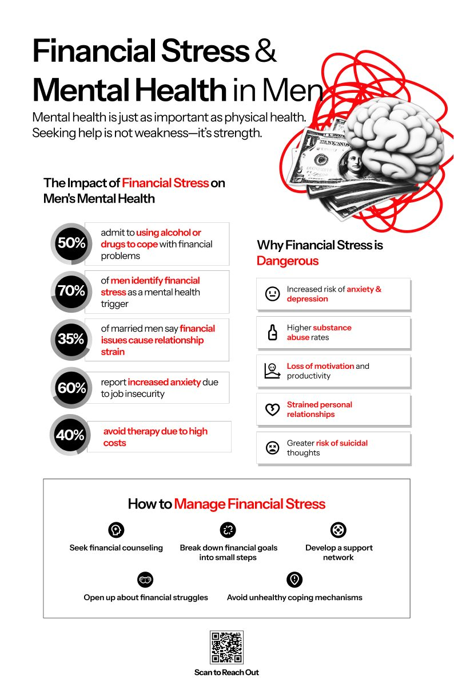
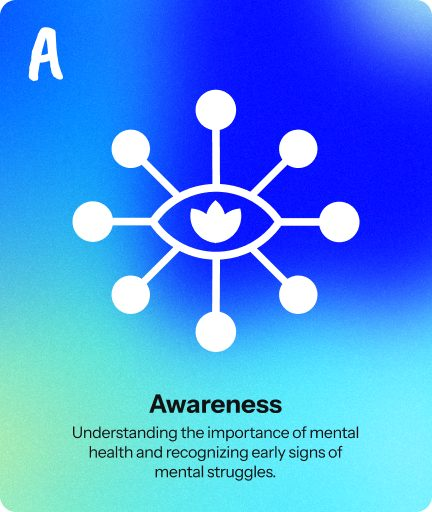
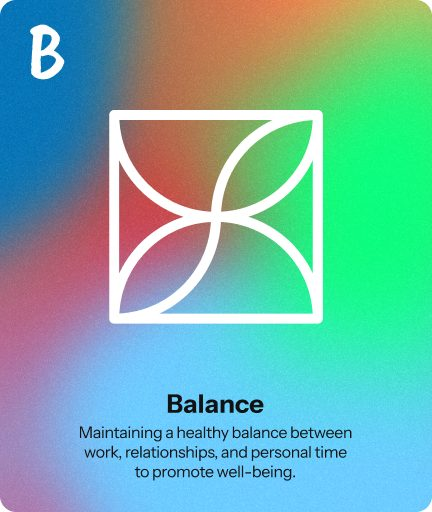
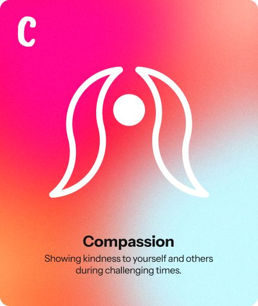
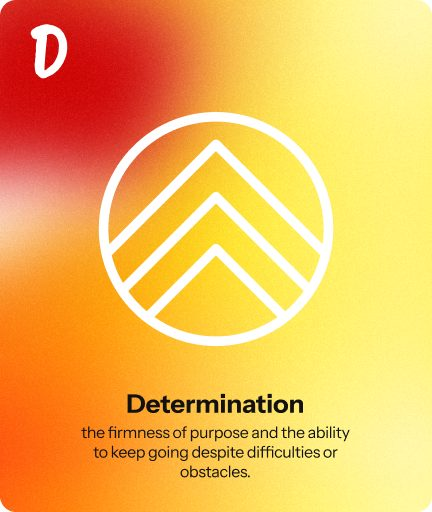
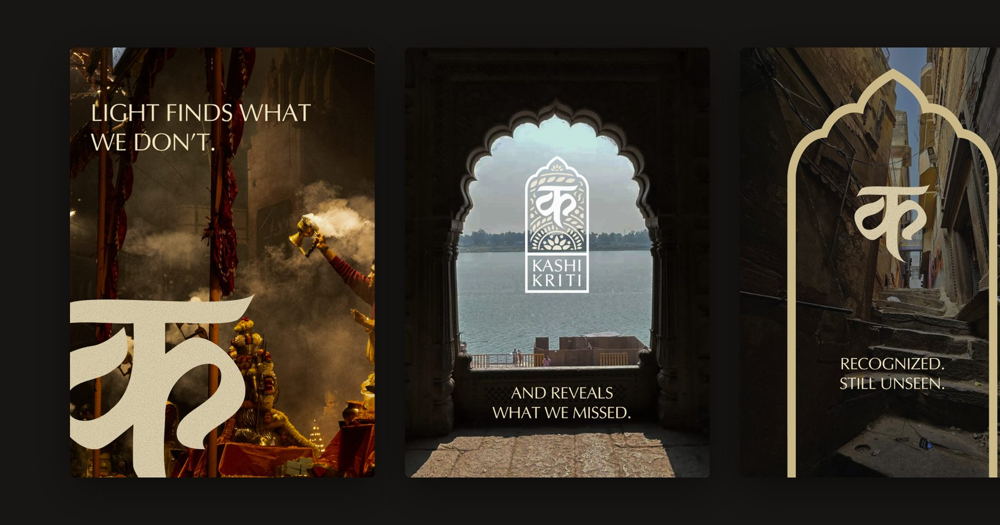